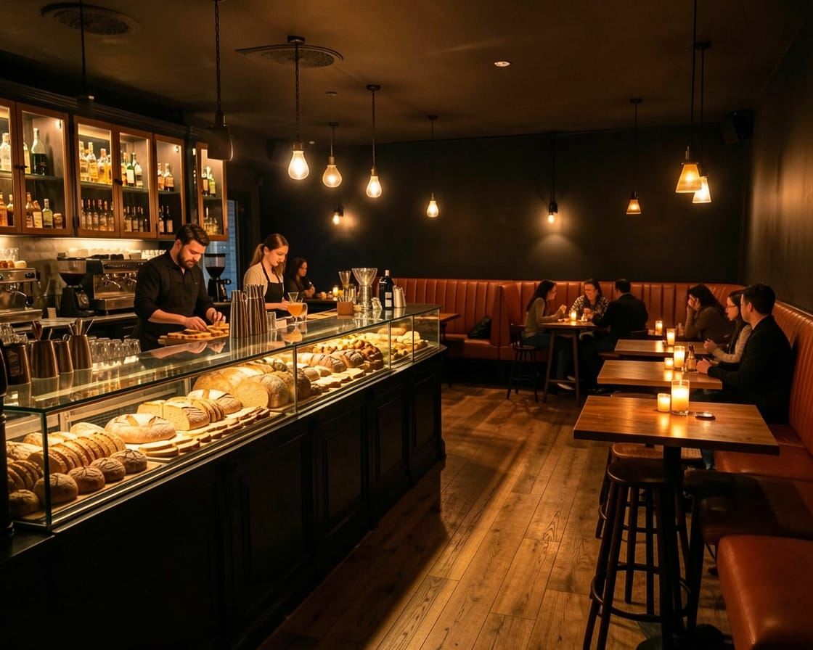
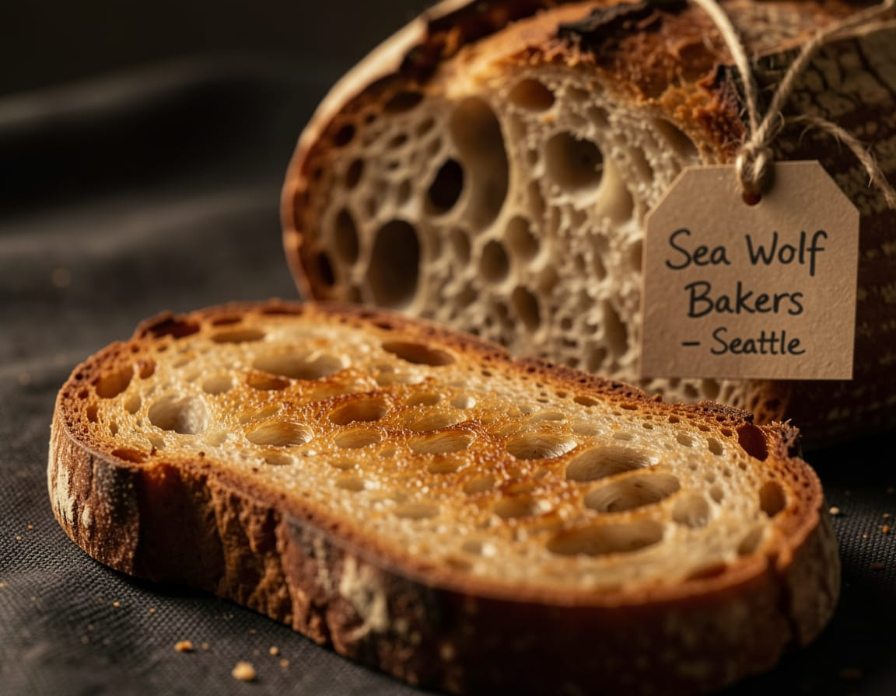

We're a toastaurant. No, we're not sorry.
Toast gets a bad rap. People call it a fallback, a last resort, the thing you make when there's nothing else. We respectfully disagree.
At Calientito, we source our loaves from local bakers who lose sleep over fermentation times. Our spreads are made in-house. Our toppings are chosen like a playlist — every combination intentional, nothing accidental.
We open at 4pm because mornings are overrated. We close at midnight because some things are worth staying up for.
"Good bread, the right heat, and something worth spreading — that's not a compromise. That's a philosophy."Learn More
The Menu
Toast done right. Curated or crafted — everything served until midnight.

Premade Toasts
Twelve signatures. Each one deliberate. Order as is — no substitutions, no regrets.
View More

Featured Bread

Sourced from Sea Wolf Bakers · Seattle, WAFeatured Loaf
An Ezekiel-style bread made from six organically sprouted grains and legumes. Dense, nutty, and deeply nourishing — the kind of bread that makes everything you put on top taste better.
Learn MoreHappenings
 Sat, Mar 29 · 8pm · Limited spots
Sat, Mar 29 · 8pm · Limited spots
Toast Speed Dating
Six rounds. Six toasts. Six strangers. Meet someone new over a shared plate — no apps, no algorithms, just bread and good conversation. Singles welcome, curiosity required.
Upcoming EventsHours & Location
Mon – Sat: 4pm – Midnight
Sunday: 2pm – 10pm
142 NW 2nd Ave, Miami FL 33128
(305) 555 – 0192